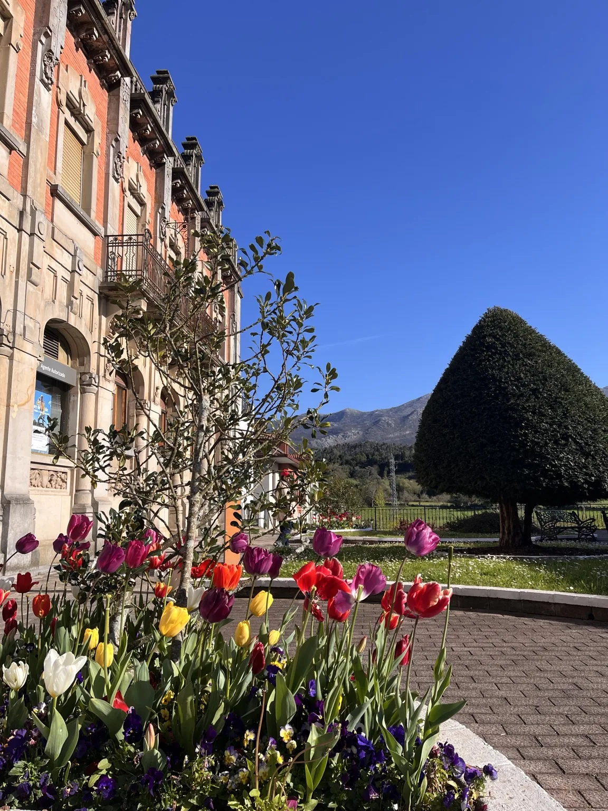

Ejemplo
Ejemplo
Lastres Apartamento
La Atalaya de Lastres
2 huéspedes1 dormitorio1 baño
Un refugio para dos, con luz de mañana y el Cantábrico al otro lado de la ventana.
Ver alojamiento



Alojamientos para disfrutar.
Viviendas en buenas manos.
Alquiler vacacional, segunda residencia o casa de verano.
Un cuidado pensado para cada una.
Anuncios, reservas y huéspedes.
Limpieza, llaves y ropa entre estancias.
La casa preparada para tus escapadas.
Y alguien cerca entre una visita y la siguiente.
Puesta a punto antes de llegar.
Revisiones en invierno y cierre al terminar la temporada.
Limpieza, lavandería, llaves y revisiones.
Servicios puntuales o periódicos para tu vivienda.
Cuéntame cómo la utilizas y qué necesitas.
Lo vemos juntos, con los pies en la zona.
Una casa con jardín, una ventana al mar o una terraza para compartir. Elige el lugar y cuéntanos tus fechas.
Todos los alojamientosColección de muestra: nombres, capacidades y equipamiento ilustrativos. Las fotografías son propias; las fichas aún no corresponden a alojamientos reales reservables.
Ejemplo
Lastres Apartamento
Un refugio para dos, con luz de mañana y el Cantábrico al otro lado de la ventana.
Ver alojamientoEjemplo
Colunga Casa con jardín
Piedra, madera y un porche para alargar la sobremesa. Una casa para disfrutar juntos.
Ver alojamientoEjemplo
Caravia Casa con terraza
Una terraza al aire libre y espacio para una escapada en familia o con amigos.
Ver alojamiento
Alquilarla, disfrutarla en verano o dejarla al cuidado de alguien cercano. Empezamos por escuchar qué necesitas.
Limpieza, lavandería, gestión de llaves, reposiciones, revisiones y coordinación de técnicos. Contrata una tarea o combina varias, según cómo utilices tu vivienda.
Hablamos, vemos tu vivienda y acordamos el trabajo. Te mantengo al tanto de cómo está la casa y de lo que necesita. Sin perder el trato cercano.
Hablamos de tu casa